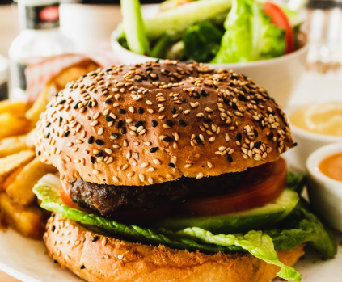
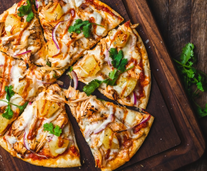
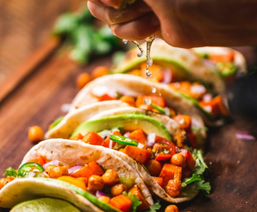
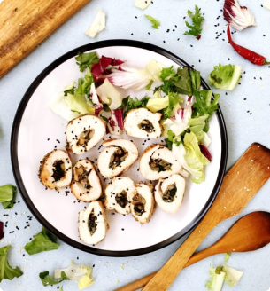
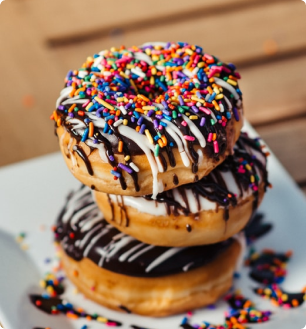
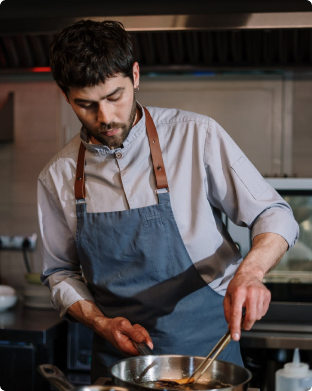
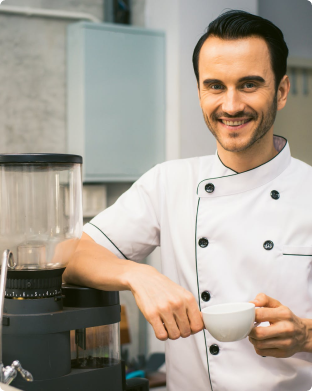
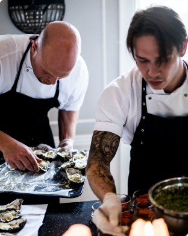

Choose Food Item
At FoodTuck, we believe that great food brings joy! Explore our menu and pick from a variety of delicious, freshly prepared dishes that satisfy every craving. Whether you're in the mood for something savory, sweet, or refreshing, we’ve got something just for you!

Burgers
Juicy, flavorful, and made to perfection

Pizza
Crispy, cheesy, and simply irresistible

Salads
Fresh, healthy, and full of goodness
Why Choose Us?
Extraordinary taste and Experienced Team
- Fresh & Tasty Ingredients 🌿
- Experienced Chefs 👨🍳
- A Menu for Every Mood 🍔🥗🍕
- Fast & Friendly Service 🚀

Fast Food

Lunch

Dinner
Professional Chefs
420
Items of Food
320
Years of Experienced
30+
Happy Customers
220
Meet Our Chefs – The Masters Behind the Flavor 👨🍳✨
At FoodTuck, our chefs are more than just cooks—they are artists, innovators, and food lovers who bring passion to every dish.

D.Estwood

J. Doe
